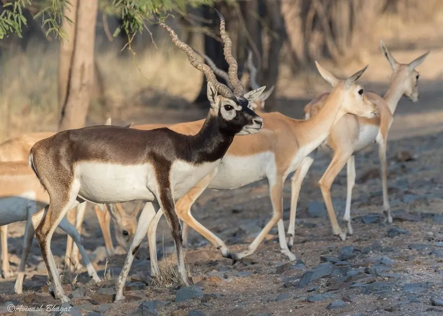

哺乳动物 · 动物界
印度黑羚 Antilope cervicapra

印度和巴基斯坦草原上的羚羊，雄性毛色黑褐、长有螺旋状长角，奔跑速度极快，常成群活动，是印度草原的代表物种。
- 分类
- 门脊索动物门纲哺乳纲目偶蹄目科牛科属黑羚属
- 栖息环境
- 印度、巴基斯坦和尼泊尔的草原、稀树草原与农田边缘
- 地理分布
- 印度、巴基斯坦和尼泊尔的草原与保护区
- 保护级别
- IUCN 无危（LC）
物种志
印度黑羚体长 1.0–1.5 米，肩高 0.7–0.85 米，体重 30–45 kg，雄性大于雌性。雄性成年后毛色转为黑褐至深棕色，腹部、眼周和四肢内侧白色；雌性为浅黄褐色。雄性的角呈螺旋状向上扭曲，角长可达 60–70 cm，雌性无角。
印度黑羚分布于印度、巴基斯坦和尼泊尔的草原、稀树草原和农田边缘，是印度草原的代表性羚羊。它以草、嫩芽和农作物为食，结成 5–50 只的群体，雄性与雌性群体分开活动，繁殖季雄性用螺旋角争夺配偶。印度黑羚奔跑速度极快，时速可达 80 km/h，善于跳跃逃避天敌。雌性妊娠期约 6 个月，每胎 1 仔。由于狩猎和栖息地减少，印度黑羚在部分地区数量下降，但在保护区内种群有所恢复，目前被列为无危。
形态与习性
- 食性草、嫩芽与农作物
- 体长1.0–1.5 m，肩高 0.7–0.85 m
- 体重30–45 kg，雄性大于雌性
- 寿命野外约 10–13 年
- 繁殖妊娠期约 6 个月，每胎 1 仔
- 角雄性螺旋状长角，长可达 60–70 cm
- 速度奔跑时速可达 80 km/h
趣味知识
- 印度黑羚雄性的角呈螺旋状扭曲，雌性则没有角。
- 成年雄性毛色黑褐，与雌性的浅黄褐色差别明显。
- 印度黑羚奔跑时速可达 80 km/h，善跳跃逃避天敌。
- 它是印度草原的代表性羚羊，常出现在保护区内。